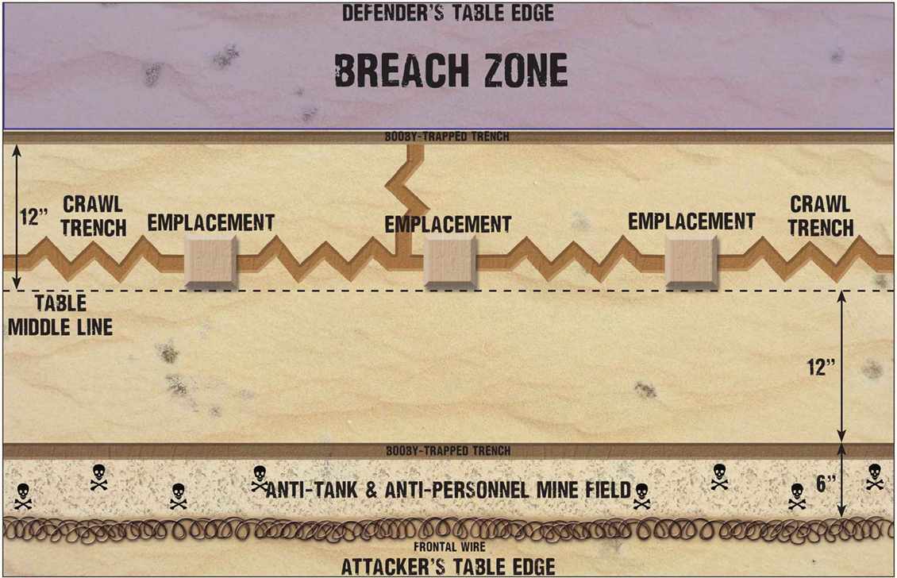

Fuerzas enfrentadas
Informe operacional sobre un asalto temprano al perímetro de Tobruk. La acción enfrenta a una posición aliada fortificada, defendida por tropas británicas y del Commonwealth, contra un ataque italiano decidido a abrir una brecha en las defensas del puerto.
Esta batalla se libra entre las fuerzas británicas y del Commonwealth contra fuerzas italianas.
Los defensores aliados deben elegirse de los selectores apropiados de pelotón reforzado británico y del Commonwealth. Representan a la guarnición que defendía Tobruk, especialmente a la 18.ª Brigada Australiana y elementos del Ejército Indio Británico.
Las fuerzas italianas deben elegirse del selector de pelotón reforzado de África en guerra de Armies of Italy and the Axis. En esta versión del escenario no hay fuerzas alemanas: el ataque es puramente italiano.
Despliegue
El jugador aliado es el defensor y despliega todas sus unidades en su lado de la mesa, entre la trinchera trampa y la línea media. Estas unidades pueden desplegarse ocultas, según las reglas habituales de Bolt Action.
El defensor debe colocar su cañón anticarro, su equipo de ametralladora y además un equipo anticarro o un equipo de mortero en los emplazamientos, de modo que todos queden ocupados. Las unidades italianas no comienzan sobre la mesa. El atacante debe designar al menos la mitad de su fuerza para formar la primera oleada; el resto queda en reserva.

Reglas especiales
Terreno
La mesa representa el desierto que rodea Tobruk, con sistemas de trincheras, alambre frontal, campos de minas y varios emplazamientos defensivos preparados. El resto de la mesa es desierto abierto, libre de otro terreno significativo.
El campo de minas cuenta como campo mixto de minas anticarro y antipersona. La trinchera trampa cuenta como terreno difícil y además como campo de minas antipersona. La trinchera de arrastre cuenta como terreno abierto, pero la infantería en su interior se considera atrincherada.
Defensores de Tobruk
Los aliados están decididos a mantener Tobruk a toda costa. El jugador británico puede elegir gratis un rasgo nacional adicional para representar esa determinación.
No puede incluir unidades inexpertas. Todas las posiciones defensivas han sido preparadas de antemano y las tropas conocen perfectamente su sistema de trincheras, refugios y pasos protegidos.
Los emplazamientos permiten a las unidades en su interior contar como atrincheradas. Las unidades desplegadas en ellos al comienzo de la partida no pueden abandonarlos y no tienen que efectuar chequeos de moral por bajas sufridas por disparos.
Combatientes del desierto
Todas las unidades veteranas aliadas tienen gratis la regla especial de Combatientes del Desierto. Cualquier unidad veterana o regular italiana puede adquirirla pagando el coste adicional correspondiente.
La experiencia acumulada en este tipo de guerra condiciona tanto la movilidad como la supervivencia en campo abierto, y encaja bien con el carácter de este escenario.
Primer turno
Durante el Turno 1, el jugador italiano debe introducir en la mesa su primera oleada. Estas unidades pueden entrar por el borde del atacante y deben recibir una orden de Run o Advance. Ten en cuenta que no es necesario realizar chequeo de orden para mover unidades a la mesa como parte de una primera oleada.
Otras condiciones
El atacante no puede realizar maniobras envolventes en este escenario. Los flancos del puesto avanzado están protegidos por otras tropas aliadas y por campos de minas.
El escenario usa reglas de combate nocturno, y no se aplica ninguna ventaja adicional por control del cielo. Tampoco se aplican restricciones por suministro limitado de combustible.
Objetivo
Las fuerzas italianas deben destruir los tres emplazamientos defensivos y, además, intentar mover tantas unidades como sea posible hacia la zona de brecha o hasta el borde de la mesa del defensor.
Duración de la partida
Lleva la cuenta de cuántos turnos han transcurrido durante la partida. Al final del Turno 6, tira un dado. Con un resultado de 1, 2 o 3, la partida termina; con un 4, 5 o 6, se juega un turno adicional.
¡Victoria!
Al final de la partida, determina qué bando ha ganado sumando los puntos de victoria obtenidos por cada uno. Si un bando consigue al menos 2 puntos más que el otro, obtiene una victoria clara. En caso contrario, el resultado se considera demasiado ajustado y la batalla termina en empate.
El defensor británico recibe 2 puntos de victoria por cada unidad italiana destruida.
El jugador italiano recibe 1 punto de victoria por cada unidad aliada destruida. Si destruye los tres emplazamientos, obtiene además 2 puntos de victoria por cada una de sus unidades que se encuentre en la zona de brecha y 3 puntos de victoria por cada unidad propia que haya cruzado el borde de la mesa del defensor antes del final de la partida.